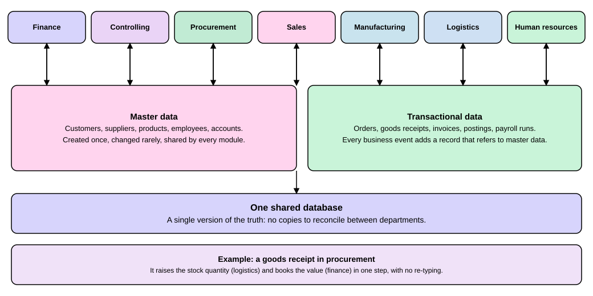

ERP Overview
|
This content was generated with the assistance of AI and should be verified against the official documentation before being relied on in production. |
An ERP (enterprise resource planning) system is one piece of business software that a company uses to run its everyday work: taking orders, buying material, keeping stock, paying suppliers, paying staff and keeping the books. A newcomer meets the term the first time a job, a project or a course says "we work on the ERP". This page explains in plain words how such a system is built, what the usual modules are, what the difference between on-premise and cloud ERP means, and which products compete in this market. After reading it you can place any ERP product on that map and understand why the rest of this site, which documents only SAP, is organized the way it is. Where a statement about SAP depends on the release, this site uses SAP S/4HANA 2025 FPS02 for the on-premise and Private Edition deployments and SAP S/4HANA Cloud Public Edition 2608 for the cloud service.
Before you read
-
No ERP or SAP knowledge is needed. You should know in general what a company department is (sales, purchasing, accounting) and what a database is: a program that stores data in tables and returns it on request.
Key terms
-
ERP: business software that covers the main processes of a company in one integrated system.
-
Module: the part of an ERP system that serves one business area, such as finance or procurement.
-
Master data: the long-lived records that describe things such as customers, suppliers, products and accounts, created once and changed rarely.
-
Transactional data: the records that each business event adds, such as an order, a goods receipt or an invoice.
-
On-premise: software that the company installs and runs on its own servers or on servers it rents and manages itself.
-
Cloud ERP: an ERP system that a vendor runs and updates as a service that the company subscribes to.
What an ERP system is
Before ERP systems, each department often had its own program and its own copy of the data. Sales kept customers in one system, accounting kept them in another, and the warehouse had a third list of products. Somebody had to re-type or reconcile data between them, and two departments could give two different answers to the same question. An ERP system removes that problem with two ideas.
The first idea is integrated modules. The system is divided into modules, one per business area, but they are parts of one product. The second idea is one shared database. All modules read and write the same tables, so there is a single version of the truth and no copies to reconcile between departments. The figure below shows both ideas: the modules on top, the master data and transactional data in the middle and the shared database below.

The figure ends with an example worth reading slowly. When a warehouse worker records a goods receipt for a purchase order in the procurement module, the same entry raises the stock quantity that logistics sees and books the value that finance sees. Nobody re-types anything, and the accounting always matches the warehouse. That cross-module effect is the main reason a company buys an ERP system instead of several separate programs.
Master data and transactional data
The data of an ERP system falls into two kinds, and the difference matters in every ERP product, including SAP.
Master data describes the things a company deals with: customers, suppliers, products, employees and the accounts of the chart of accounts. A record is created once, changed rarely and shared by every module. A product record, for example, is used by the sales module to quote a price, by procurement to order it and by logistics to store it.
Transactional data records what happens. Every business event, such as a customer order, a goods receipt, an invoice, a posting in the books or a payroll run, adds a new record. A transactional record does not repeat the description of the customer or the product; it refers to the master data record. That is why a wrong master data record (a wrong tax number on a supplier, say) spreads into every document that refers to it, and why ERP projects spend so much effort on master data quality.
Typical modules
Product names and boundaries differ between vendors, but nearly every ERP system offers modules for these areas, also shown in the figure.
| Module | What it covers |
|---|---|
Finance |
The general ledger, accounts payable and receivable, asset accounting and the financial statements. |
Controlling |
Management accounting: costs and profits by cost center, order or product, as opposed to the legally required books. |
Procurement |
Buying: requisitions, purchase orders, goods receipts and supplier invoices. |
Sales |
Selling: quotations, customer orders, deliveries and customer invoices. |
Manufacturing |
Producing goods: bills of material, production orders and planning of materials and capacity. |
Logistics |
Stock and movement of goods: warehouses, stock quantities, transport and shipping. |
Human resources |
Employee records, time recording and payroll. |
The ERP section of this site treats these areas as the vocabulary of the whole subject. The SAP pages that follow it describe, in plain words, how SAP names and divides them.
On-premise and cloud ERP
An ERP system can be run in two broad ways, and most products now offer both.
-
On-premise. The company (or a hosting partner working for it alone) installs the software and runs it. It decides when to upgrade, can change the system deeply and carries the work of servers, backups and security. An upgrade is a project that the company schedules.
-
Cloud ERP. The vendor operates the system and the company subscribes to it. The vendor applies updates for all customers, the company configures the system but changes it only through the extension points the vendor allows, and the operations work (backup, disaster recovery, maintenance) moves to the vendor.
SAP shows both ways in one product family. SAP describes SAP S/4HANA Cloud Public Edition as a cloud ERP solution on a subscription-based model whose updates are fully managed by SAP and that offers ready-to-go APIs for integration. The on-premise and Private Edition deployments of SAP S/4HANA, which this site documents with the 2025 FPS02 release, leave more control, and more operational work, with the company or its partner. The same split decides how a developer works: the cloud service allows only extensions built on released interfaces, while an on-premise system also allows classic changes. The Language Versions and Released APIs page of the ABAP section explains that consequence.
The vendor landscape
The list below is a short orientation, not a ranking. Each line names the product as the vendor’s own page names it and gives that official site. The descriptions rest on those pages, read on 2026-11-13.
-
SAP S/4HANA. The product family documented on this site. The vendor’s page presents SAP S/4HANA Cloud Public Edition as an ERP solution for finance, supply chain, HR and sales processes, sold by subscription; the on-premise and Private Edition deployments are covered in the SAP help portal. Official site: sap.com/products/erp/s4hana.html.
-
Oracle. The vendor’s ERP page presents Oracle Cloud ERP, a set of solutions for managing accounting, procurement, manufacturing and similar business activities in the cloud. Official site: oracle.com/erp.
-
Microsoft Dynamics 365. A suite of business applications that combines customer relationship management and ERP; its ERP-side products named on the vendor’s page are Dynamics 365 Finance, Dynamics 365 Supply Chain Management and Dynamics 365 Business Central. Official site: microsoft.com/dynamics-365.
-
Odoo. A suite of open source business apps covering, among others, accounting, inventory and e-commerce; the Community edition is open source, the Enterprise edition adds apps and services, and it can be hosted by the vendor or on premise. Official site: odoo.com.
-
ERPNext. Described by its maintainers as open source enterprise resource planning software covering accounting, sales, procurement, stock, manufacturing, projects, HR and payroll; the vendor recommends hosting on Frappe Cloud. Its address redirects to the maintainers' page at frappe.io/erpnext.
Only SAP is documented on this site. The other four are named so that a reader who meets them knows they are comparable products with the same ideas (modules, one shared database, master and transactional data). This site has no pages about them.
Summary
-
An ERP system is one business application whose modules (finance, controlling, procurement, sales, manufacturing, logistics and human resources) share one database, so a posting in one module is visible in the others.
-
Master data describes long-lived things such as customers and products; transactional data records every business event and refers to master data.
-
ERP can run on-premise, where the company operates it, or as cloud ERP, where the vendor operates it and the company extends it only through allowed interfaces.
-
SAP S/4HANA, Oracle, Microsoft Dynamics 365, Odoo and ERPNext are the products named here; this site documents SAP S/4HANA 2025 FPS02 (on premise and Private Edition) and Cloud Public Edition 2608.